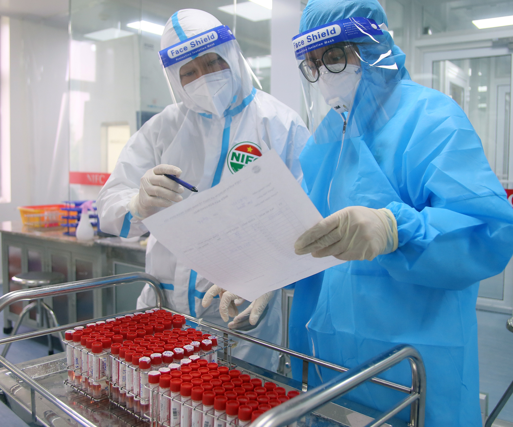

Bộ Y tế rà soát chỉ định đối tượng xét nghiệm trong tình hình mới
Dự thảo Quyết định hướng dẫn đối tượng xét nghiệm SAR-CoV-2 tại bệnh viện và nguồn kinh phí chi trả bổ sung thêm một số trường hợp được chỉ định xét nghiệm như: người tới bệnh viện có nguy cơ cao sau khi phân luồng, sàng lọc tại cổng bệnh viện; người mắc bệnh mạn tính, bệnh nhân xạ trị, bệnh nhân chạy thận nhân tạo...
Chiều 12/10 tại Bộ Y tế, Cục Quản lý Khám chữa bệnh phối hợp với các Vụ/Cục của Bộ Y tế đã họp với các bệnh viện về việc rà soát chỉ định đối tượng xét nghiệm SARS-CoV-2 trong các cơ sở khám, chữa bệnh.
Các đại biểu cũng thảo luận về Dự thảo Quyết định hướng dẫn đối tượng xét nghiệm SAR-CoV-2 tại bệnh viện và nguồn kinh phí chi trả.

Do đó, Bộ Y tế và các bệnh viện cùng thảo luận và xem xét, đề xuất các phương án, tình huống, đối tượng phải thực hiện xét nghiệm, các tình huống cần chỉ định xét nghiệm lúc nào xét nghiệm test nhanh, đối tượng làm làm xét nghiệm RT- PCR, đối tượng nào cần xét nghiệm, trường hợp nào BHYT chi trả, đối tượng nào nhà nước chi trả, người bệnh phải chi trả phần nào…
PGS.TS Lương Ngọc Khuê cũng đưa ra nhiều gợi ý để các thành viên cuộc họp bàn luận, đó là cần đánh giá lại công tác xét nghiệm từ giai đoạn đầu khi dịch xuất hiện tại Việt Nam, việc xác định nhiễm SAR-CoV-2 qua khai thác tiền sử bệnh sử và xét nghiệm, giai đoạn 2, 3 khi F0 mất dấu xét nghiệm như thế nào, giai đoạn 4 bùng phát dịch với chủng Delta thì xét nghiệm như thế nào.
Hiện nay, các cán bộ y tế đã được tiêm vaccine đầy đủ, nhiều người đến khám chữa bệnh cũng đã được tiêm vaccine thì xét nghiệm nhanh như thế nào...
Việc xét nghiệm cũng đưa ra các tiêu chí, quy định để tránh lạm dụng xét nghiệm, việc chi trả xét nghiệm đảm bảo đúng nguồn chi trả, tránh chi trả tràn lan…
Bổ sung thêm một số trường hợp được chỉ định xét nghiệm
Hiện các cơ sở khám bệnh, chữa bệnh căn cứ điều kiện, khả năng triển khai thực hiện xét nghiệm theo một hoặc kết hợp các phương pháp xét nghiệm như: Phương pháp xét nghiệm RT-PCR đơn mẫu theo hướng dẫn tại Quyết định số 1282/QĐ-BYT ngày 21/3/2020 của Bộ Y tế về việc ban hành "Hướng dẫn tạm thời việc xét nghiệm COVID-19;
Phương pháp xét nghiệm PCR gộp mẫu theo hướng dẫn của Bộ Y tế tại Quyết định số 1817/QĐ-BYT ngày 07/4/2021. Trường hợp có triệu chứng, người tiếp xúc trực tiếp có nguy cơ cao thì xét nghiệm sàng lọc mẫu đơn.
Xét nghiệm nhanh kháng nguyên theo hướng dẫn tại Quyết định số 2022/QĐ-BYT ngày 28/4/2021 của Bộ Y tế về việc ban hành Hướng dẫn sử dụng sinh phẩm xét nghiệm nhanh kháng nguyên virus SARS-CoV-2
Về tần suất xét nghiệm, hiện đối với cán bộ, nhân viên y tế, người lao động tại cơ sở khám chữa bệnh thực hiện xét nghiệm theo định kỳ 07 ngày/lần;
Đối với người bệnh sau khi khám ngoại trú cần chuyển vào điều trị nội trú: thực hiện XN ngay sau khi có quyết định chuyển vào điều trị nội trú;
Đối với người bệnh chuyển tuyến phải thực hiện xét nghiệm;
Đối với người bệnh đang được điều trị nội trú, thực hiện xét nghiệm theo định kỳ 07 ngày điều trị/lần. Trong trường hợp có ca mắc COVID-19 trong khu điều trị nội trú thì xét nghiệm ngay toàn bộ các đối tượng;
Đối với người nhà chăm sóc người bệnh được ở lại, trường hợp người bệnh điều trị nội trú dưới 07 ngày hoặc 03 ngày thì được 1 lần xét nghiệm virus SARS-CoV-2 cho người nhà chăm sóc người bệnh và trường hợp người bệnh điều trị nội trú từ 03 hoặc 07 ngày trở lên thì được 02 lần xét nghiệm COVID-19 cho người nhà chăm sóc người bệnh.
Dự thảo Quyết định mới nhất bổ sung thêm một số trường hợp được chỉ định xét nghiệm như người tới bệnh viện có nguy cơ cao sau khi phân luồng, sàng lọc tại cổng bệnh viện; người mắc bệnh mạn tính, bệnh nhân xạ trị, bệnh nhân chạy thận nhân tạo, tái khám và lĩnh thuốc định kỳ cho bệnh mạn tính...
 Kết Nối Với FaceBook
Kết Nối Với FaceBook
 Kết Nối Với Google
Kết Nối Với Google